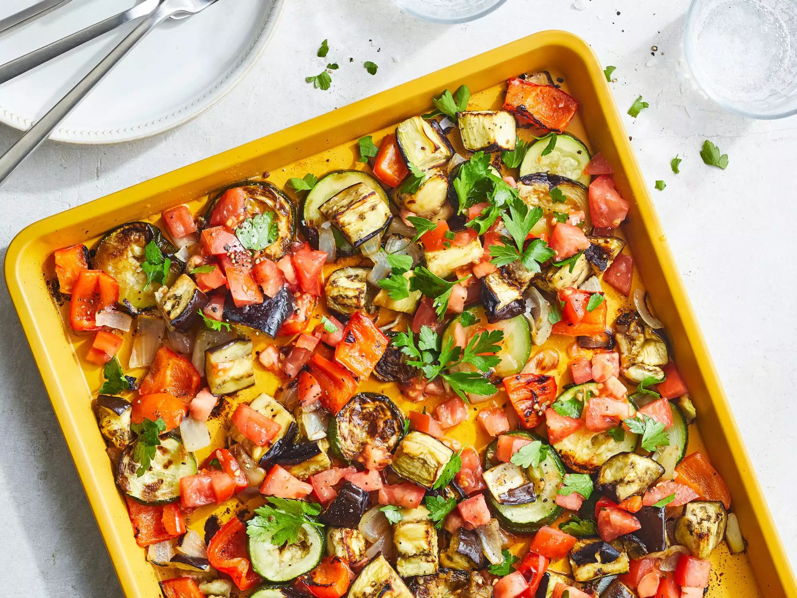

Simple Sheet Pan Ratatouille

Mice! Everywhere are mice!
wah wah wah wuh dream on dream on.
- 1 eggplant
- 1 zucchini
- 1 small green bell pepper
- 1 onion
- cooking spray
- ¼ teaspoon ground black pepper
- 1 tomato
- 1 tablespoon olive oil
- ¼ cup chopped fresh parsley
- salt
Step 1
Preheat the oven to 425 degrees F (220 degrees C).Step 2
Arrange eggplant, zucchini, bell pepper, and onion on a greased of foil-lined baking sheet. Spray vegetables with cooking spray. Season with 1/8 teaspoon black pepper.Step 3
Roast in the preheated oven, stirring and rotating pan once cooking, until vegetables are lightly browned and tender, about 40 minutes.Step 4
Meanwhile, stir together tomato,oil , parsley, and 1/8 teaspoon each salt and black pepper in a large bowl. Add cooked vegetables anf remaining ¼ teaspoon salt. Toss to combine.